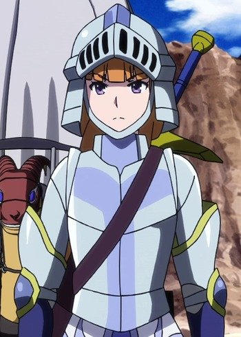

|
Alicia Rue |
- Sword Art Online
- Sword Art Online: Sword Art Offline
- Sword Art Online Movie: Ordinal Scale
- Sword Art Online: Alicization - War of Underworld: Part II
|
Alicia Rue is the Lord of the Cait Sith race in ALfheim Online. She is trained with dark magic called Moonlight Mirror. She formed an alliance of the Slyphs. |
| |
Carol |
- Baccano!
- Baccano! Specials
|
Carol is an assistant to Gustav St. Germain, Vice President of the Daily Days. She is a young girl who is trying to educate herselfto be a photojournalist. Gustav is her mentor. |
 |
Chloe von Einzbern |
- Fate/kaleid liner Prisma Illya 2wei!
- Fate/kaleid liner Prisma Illya 2wei! OVA
- Fate/kaleid liner Prisma Illya 2wei Herz!
- Fate/kaleid liner Prisma Illya 2wei Herz! Specials
- Fate/kaleid liner Prisma Illya 3rei!!
- Fate/kaleid liner Prisma Illya 3rei!! Specials
|
Chloe von Einzbern or Kuro is a being created from Illya's hidden power and the Archer class card. She is a twin of Illya's original self. Kuro is calmer and more nonchalant than Illya. She is devious and manipulative. She is deeply bitter because of being sealed inside of Illya and will easily get into conflicts with her. Undernearth her problematic personality, she is a caring, sweet, straight-forward and timid girl. |
|  |
Kahabell |
- I'm Standing on a Million Lives
|
Kahabell is a knight in another world. She is always ready to force justice no matter the common sense with her indomitable, reflects that of truly fanatical knight. She is known to be rather sadistic as she enjoys the sensation of cutting flesh of living things. |
 |
Kim Diehl |
- Soul Eater
- Soul Eater NOT!
|
Kim Diehl is a lamp meister and partner to Jacqueline. She is obsessed with making money since she is tanuki witch. She has a nasty personality due to her appearance. Dhe is lax person and appears insenitive to others. She has a manipulative personality. Kim was part of the witch society but was kick out. |
 |
Mallow's Mother |
|
Mallow's Mother is the mother of Mallow and Ulu anf the wife of Abe. She passed away from an illness along time ago. |
 |
Merielle |
|
Merielle is the daughter of Carr Benedict and Fiona and Treize's twin sister. Merielle has a pushy and headstrong personality. She is good friends with Matilda. |
| |
Normajean |
- Pokemon Diamond and Pearl
|
Normajean is an apprentice that works at a Pokemon Day Cares. She is in charge of caring for several Baby Pokemon and really cares for them as well. |
 |
Regan |
|
Regan is the grand daughter of Balthasar, the servant of the Farnese. She is bossy and has a talented for acting. |
| |
Tyler |
- Pokemon Diamond and Pearl
|
Tyler is a Pokemon Trainer who is beginning his Pokemon journey with his Piplup. He wants to catch a Yanma so bad. |


.jpg)